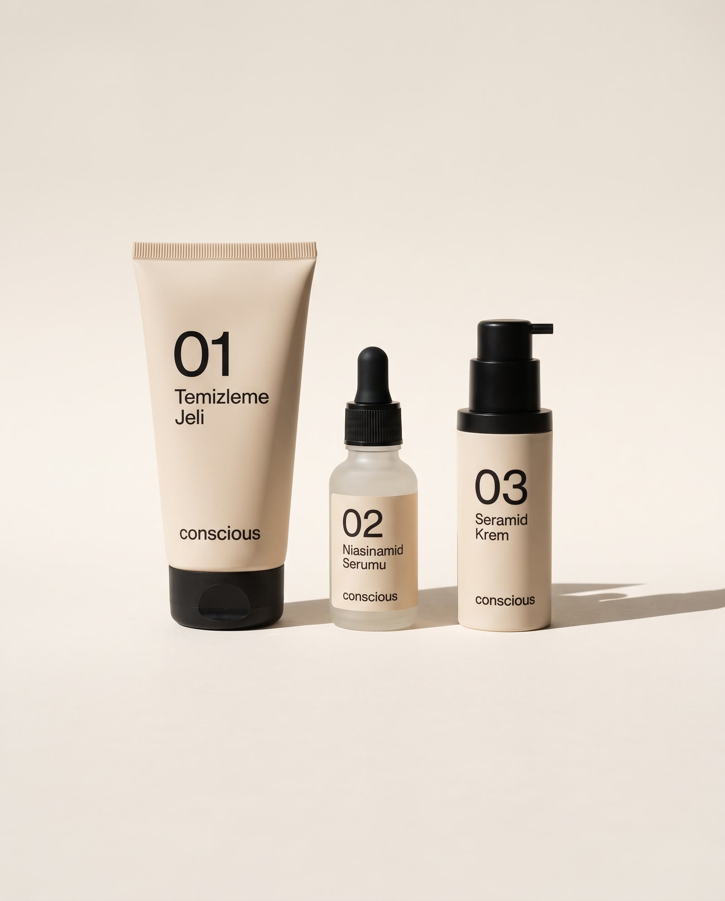
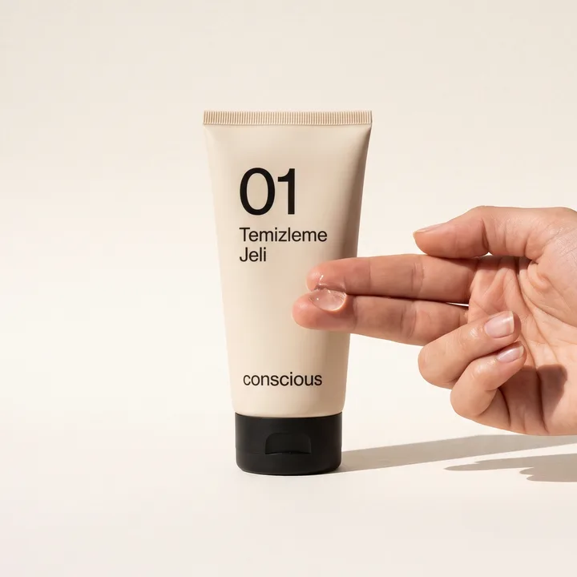
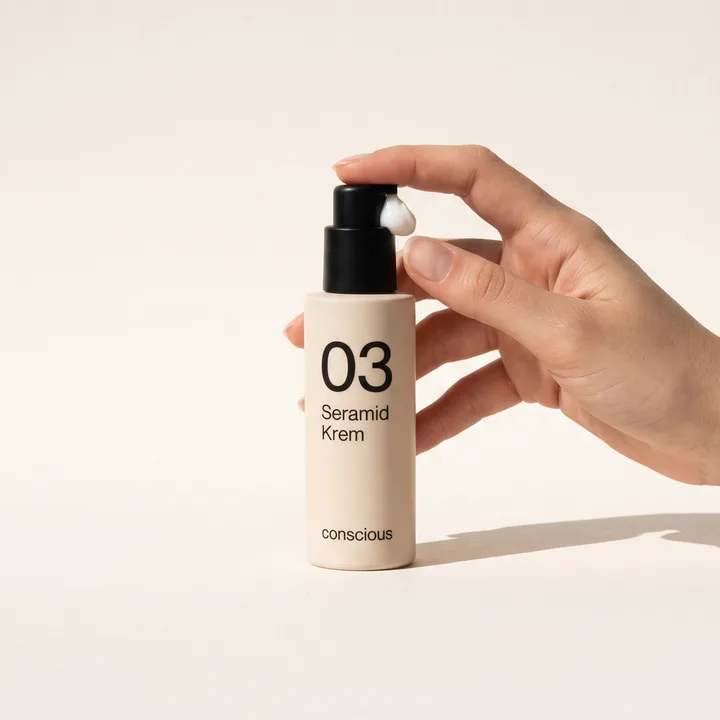
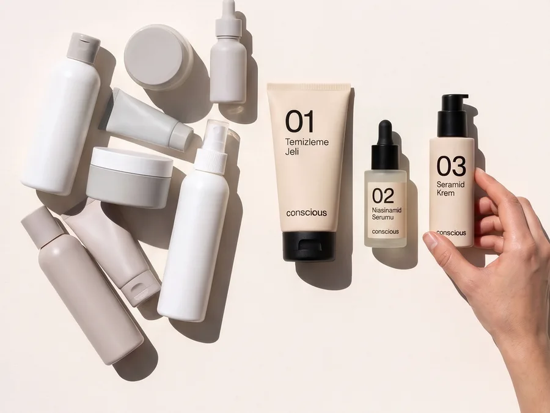

Rutin Seti
Üç ürün, bir rutin.
Rutin Seti lansman fiyatıyla 1.390 TL.
19 Ekim 2026 Pazartesi, 23.59: Lansman fiyatı bitiyor.
Kargo: 13-19 Ekim arasında bütün siparişlerde ücretsiz.
Rutin
Önce 01, sonra 02, sonra 03. Sıra her şişenin üstünde yazıyor. Rutin numaralı ve sabit.
-

01 Temizleme Jeli
- Ne zaman
- Sabah ve akşam, ilk adım
- Ne kadar
- Nemli yüze fındık büyüklüğünde, köpürt, durula
-
02 Niasinamid Serumu
- Ne zaman
- Sabah ve akşam, temizlikten sonra
- Ne kadar
- 3-4 damla
-

03 Seramid Krem
- Ne zaman
- Sabah ve akşam, son adım
- Ne kadar
- Bir pompa
03 Seramid Krem güneş koruma faktörü (SPF) içermez. Sabah rutini güneş koruyucuyla biter. Conscious güneş koruyucu satmıyor.
Ürünler
-
01 Temizleme Jeli
- Tür
- Yüz temizleyici
- Boy
- 150 ml, tüp
- Fiyat
- 449 TL
- İçerik
- Yulaf özü, gliserin, glukozitler
-
02 Niasinamid Serumu
- Tür
- Serum
- Boy
- 30 ml, damlalıklı cam şişe
- Fiyat
- 649 TL
- İçerik
- %5 niasinamid, pantenol, sodyum hiyalüronat
-
03 Seramid Krem
- Tür
- Nemlendirici
- Boy
- 50 ml, pompalı şişe
- Fiyat
- 579 TL
- İçerik
- Seramidler, skualan, shea yağı
Üç ürün bir kutuda Rutin Seti olarak da satılıyor. Üç ürün de açıldıktan sonra 12 ay içinde kullanılır.
Etiketi okuyalım
Conscious'ın arka yüzünde her içeriğin yanında Türkçe bir satır var. Satırlar şunlar:
- Avena Sativa Kernel ExtractYulaf özü. Yulaf tanesinden elde ediliyor.01
- GlycerinGliserin. Suyu kendine çeken, nem tutucu bir bileşen.01, 02, 03
- Coco-Glucoside, Decyl GlucosideGlukozitler. Hindistancevizi yağı ve şekerden elde edilen temizleyici bileşenler.01
- NiacinamideNiasinamid. B3 vitamininin bir formu.02
- PanthenolPantenol. B5 provitamini.02
- Sodium HyaluronateSodyum hiyalüronat. Hiyalüronik asidin tuzu, su tutan bir molekül.02
- Ceramide NP, Ceramide AP, Ceramide EOPSeramidler. Cildin dış katmanında da bulunan yağ molekülleri.03
- SqualaneSkualan. Hafif bir yağ, şeker kamışından elde ediliyor.03
- Butyrospermum Parkii ButterShea yağı. Shea ağacının çekirdeğinden elde edilen yağ.03
Nil'in notu

Nil Aydemir dokuz yıl bir fason kozmetik üreticisinde formül geliştirdi. Aynı tesisten çıkan ürünlerin farklı marka adlarıyla, farklı vaatlerle ve çok farklı fiyatlarla satıldığını gördü.
Kendi banyosundaki on bir ürünün içerik listesini tek tek okuyunca çoğunun aynı içerikleri taşıdığını fark etti.
2025'te Conscious'ı kurdu: üç ürün, etiketteki her içeriği Türkçe açıklayan bir arka yüz, numarayla sıralanmış kısa bir rutin. Ürünler İstanbul'da bir fason tesiste üretiliyor.
“Rafta ne aldığımı bilmek istedim. Conscious bu yüzden var.”
Sorular
Hangi sırayla kullanıyorum?
Önce 01, sonra 02, sonra 03. Sıra her şişenin üstünde yazıyor.
Sabah da akşam da mı?
- 01 Temizleme Jeli
- Sabah ve akşam, ilk adım
- 02 Niasinamid Serumu
- Sabah ve akşam, temizlikten sonra
- 03 Seramid Krem
- Sabah ve akşam, son adım
03 Seramid Krem güneş koruma faktörü (SPF) içermez. Sabah rutini güneş koruyucuyla biter. Conscious güneş koruyucu satmıyor.
Cildim kolay kızarıyor, kullanabilir miyim?
[İDDİA · Selin'den]
Conscious'ın arka yüzünde her içeriğin yanında Türkçe bir satır var.
Ürünlerin dokusu nasıl?
- 01 Temizleme Jeli
- Şeffaf jel, az köpürür
- 02 Niasinamid Serumu
- Su kıvamında, renksiz
- 03 Seramid Krem
- Orta kıvamda beyaz krem
Açtıktan sonra ne kadar kullanabilirim?
Üç ürün de açıldıktan sonra 12 ay içinde kullanılır.
Kargo ücreti ne kadar?
13-19 Ekim arasında bütün siparişlerde ücretsiz. 20 Ekim'den sonra 750 TL ve üzeri siparişlerde ücretsiz, altında 89 TL.
Siparişim ne zaman elimde olur?
1-3 iş günü.
Beğenmezsem iade edebilir miyim?
Açılmamış ürünlerde 14 gün içinde. İade kargosunu Conscious öder.